Introduction
This vignette demonstrates three ggplot2-based functions for visualizing chromatographic peaks in LC-MS metabolomics data:
-
gplotChromPeaks(): Visualize detected peaks as rectangles in RT vs m/z space -
gplotChromPeakImage(): Heatmap showing peak density across samples and retention time -
ghighlightChromPeaks(): Add peak annotations to existing chromatogram plots
All functions work with both XcmsExperiment (XCMS v4+) and XCMSnExp (XCMS v3) objects.
Setup
Data Preparation
We’ll use the faahKO package example data:
# Get example CDF files
cdf_files <- dir(system.file("cdf", package = "faahKO"),
recursive = TRUE, full.names = TRUE)[1:3]
# Load data as XcmsExperiment
xdata <- readMsExperiment(
spectraFiles = cdf_files,
BPPARAM = SerialParam()
)
# Add sample metadata
sampleData(xdata)$sample_name <- basename(cdf_files)
sampleData(xdata)$sample_group <- c("KO", "KO", "WT")Peak Detection
# Detect peaks using CentWave algorithm
cwp <- CentWaveParam(
peakwidth = c(20, 80),
ppm = 25
)
xdata <- findChromPeaks(xdata, param = cwp, BPPARAM = SerialParam())
# Check number of peaks detected
cat("Total peaks detected:", nrow(chromPeaks(xdata)), "\n")
#> Total peaks detected: 6535gplotChromPeaks: Peak Distribution Visualization
The gplotChromPeaks() function creates a scatter plot showing detected peaks as rectangles in retention time vs m/z space.
Basic Usage
Original XCMS Version
# Base R graphics version
plotChromPeaks(xdata, file = 1)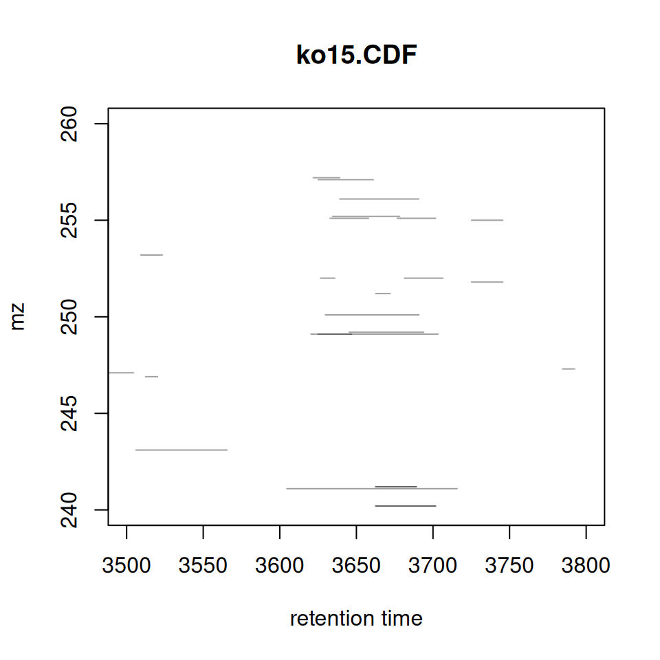
xcmsVis ggplot2 Version
# ggplot2 version
p1 <- gplotChromPeaks(xdata, file = 1)
print(p1)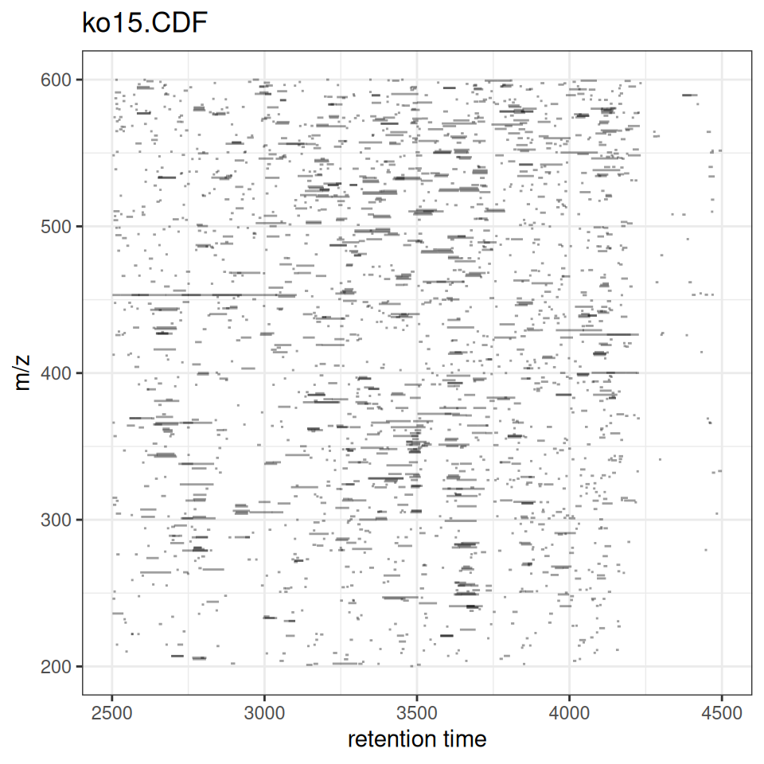
Customizing the Plot
# Customize colors and styling
p1 +
labs(
title = "Detected Peaks - Sample 1",
x = "Retention Time (s)",
y = "m/z"
) +
theme_minimal()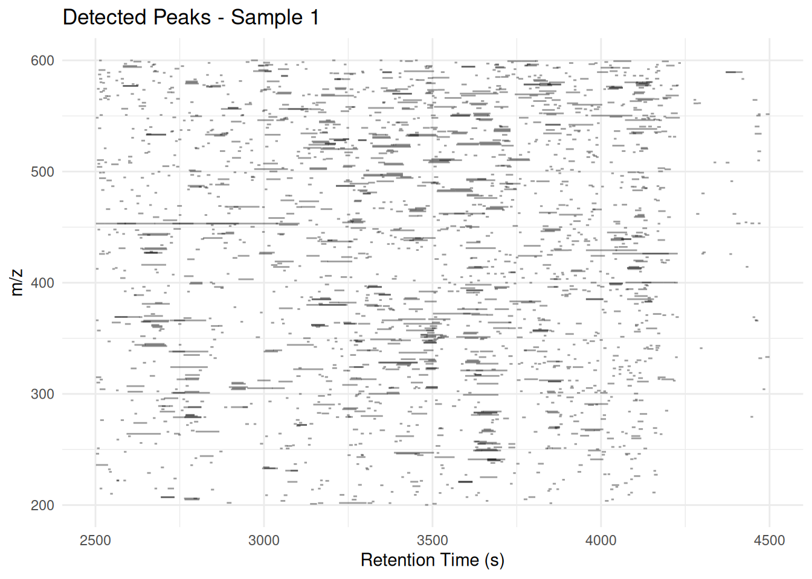
Focusing on a Region
# Focus on a specific RT and m/z region
p2 <- gplotChromPeaks(
xdata,
file = 1,
xlim = c(2500, 3500),
ylim = c(200, 600),
border = "darkblue",
fill = "lightblue"
)
print(p2)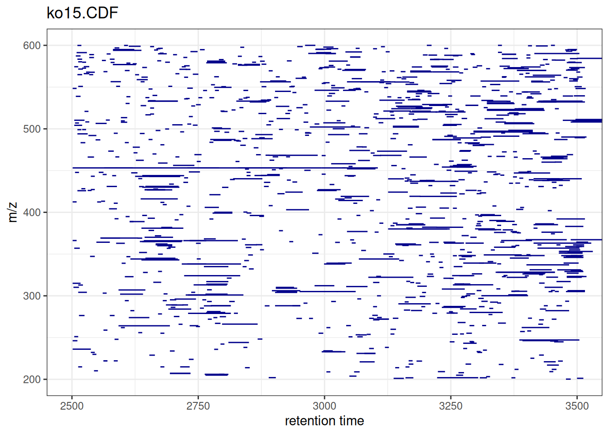
Comparing Multiple Samples
# Compare peak distributions across samples
library(patchwork)
p_s1 <- gplotChromPeaks(xdata, file = 1) + labs(title = "Sample 1 (KO)")
p_s2 <- gplotChromPeaks(xdata, file = 2) + labs(title = "Sample 2 (KO)")
p_s3 <- gplotChromPeaks(xdata, file = 3) + labs(title = "Sample 3 (WT)")
p_s1 + p_s2 + p_s3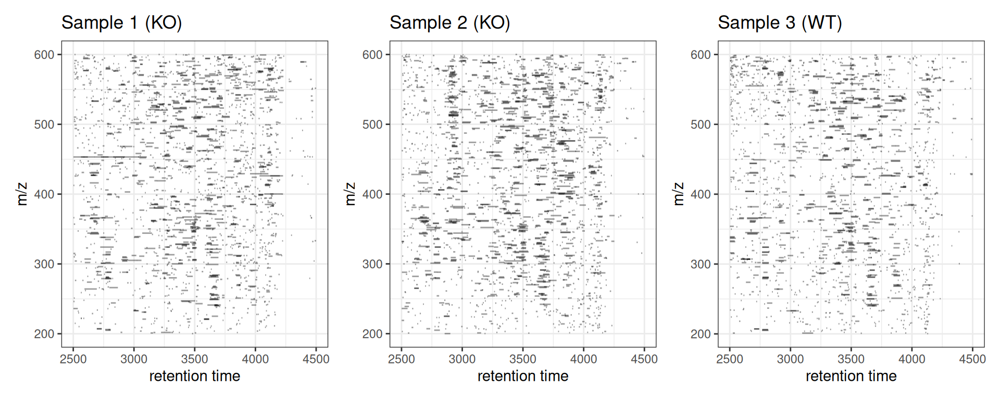
gplotChromPeakImage: Peak Density Heatmap
The gplotChromPeakImage() function creates a heatmap showing the number of detected peaks per sample across retention time bins.
Basic Usage
Original XCMS Version
# Base R graphics version
plotChromPeakImage(xdata, binSize = 30)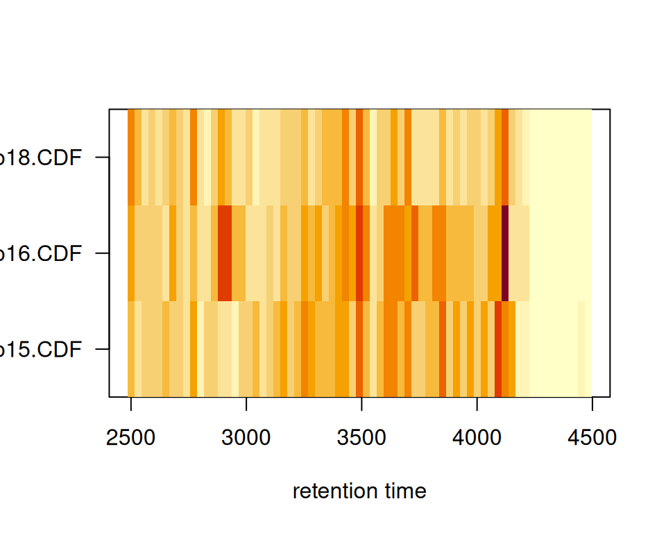
xcmsVis ggplot2 Version
# ggplot2 version
p3 <- gplotChromPeakImage(xdata, binSize = 30)
print(p3)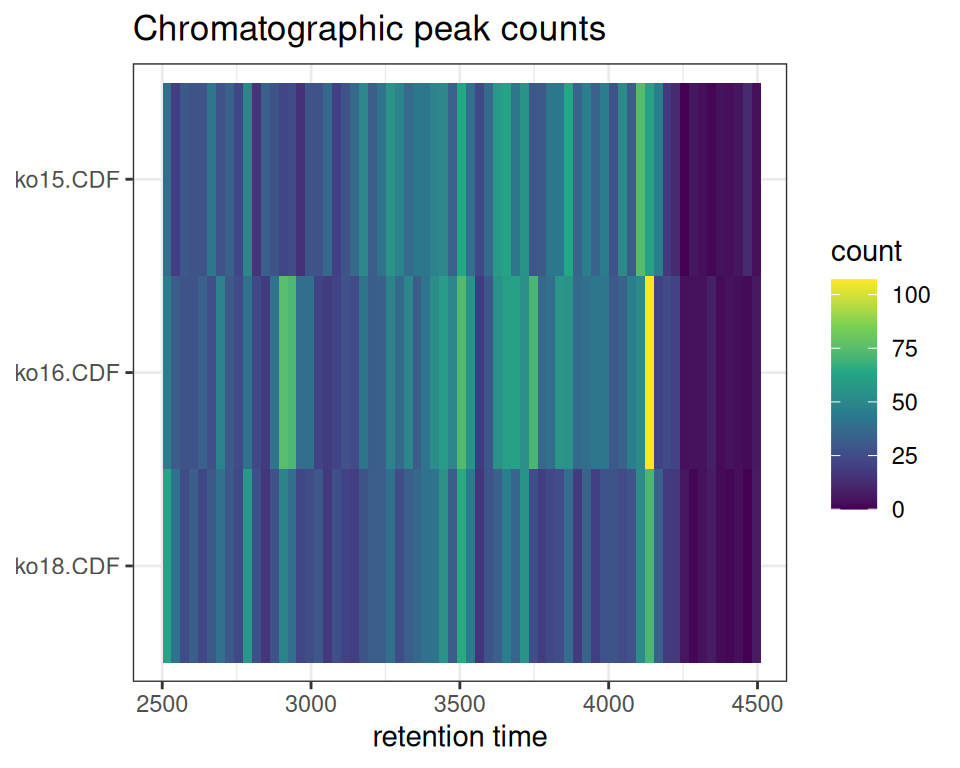
With Different Bin Sizes
# Compare different bin sizes
p_b15 <- gplotChromPeakImage(xdata, binSize = 15) +
labs(title = "Bin Size: 15s")
p_b30 <- gplotChromPeakImage(xdata, binSize = 30) +
labs(title = "Bin Size: 30s")
p_b60 <- gplotChromPeakImage(xdata, binSize = 60) +
labs(title = "Bin Size: 60s")
p_b15 + p_b30 + p_b60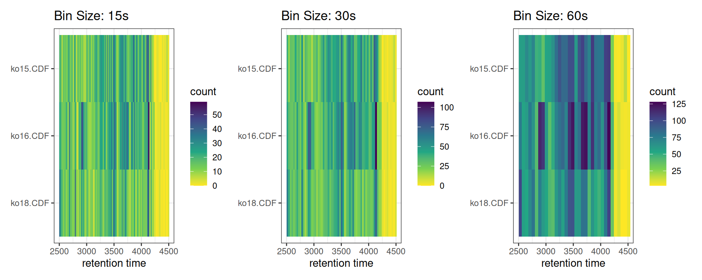
Log-Transformed View
# Compare linear vs log scale
p_linear <- gplotChromPeakImage(xdata, log_transform = FALSE) +
labs(title = "Linear Scale")
p_log <- gplotChromPeakImage(xdata, log_transform = TRUE) +
labs(title = "Log2 Scale")
p_linear + p_log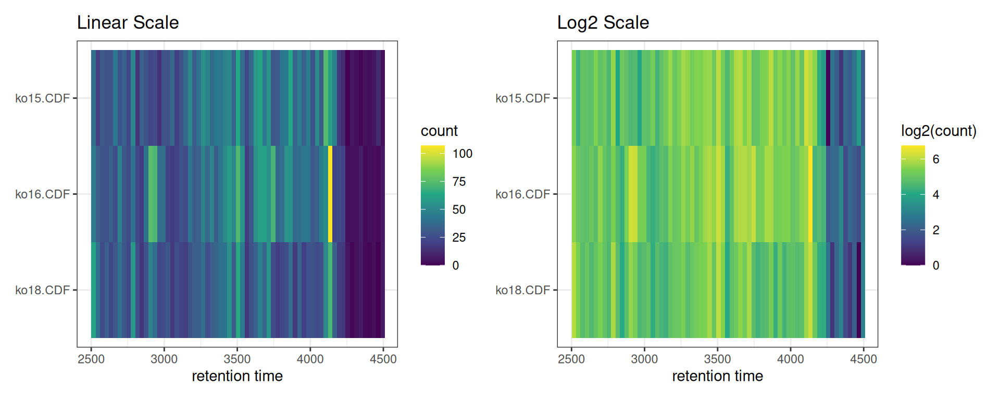
Interactive Version
# Make it interactive
ggplotly(p3)ghighlightChromPeaks: Annotating Chromatograms
The ghighlightChromPeaks() function adds peak annotations to existing chromatogram plots. It returns ggplot2 layers that can be added to chromatogram visualizations.
Basic Usage
First, let’s extract a chromatogram for a specific m/z range:
# Extract chromatogram for m/z 200-210
mz_range <- c(200, 210)
rt_range <- c(2500, 3500)
# Get chromatogram data
chr <- chromatogram(xdata, mz = mz_range, rt = rt_range)
# Convert to data frame for plotting
chr_data <- data.frame(
rt = rtime(chr[1, 1]),
intensity = intensity(chr[1, 1])
)Now let’s create the base chromatogram plot and add peak annotations:
# Base chromatogram plot
p_chrom <- ggplot(chr_data, aes(x = rt, y = intensity)) +
geom_line() +
theme_bw() +
labs(
title = "Chromatogram with Highlighted Peaks (Rectangle)",
x = "Retention Time (s)",
y = "Intensity"
)
# Add peak highlights as rectangles
peak_layers <- ghighlightChromPeaks(
xdata,
chrom_data = chr_data,
rt = rt_range,
mz = mz_range,
type = "rect",
border = "red",
fill = alpha("red", 0.2)
)
# Combine base plot with peak annotations
p_chrom + peak_layers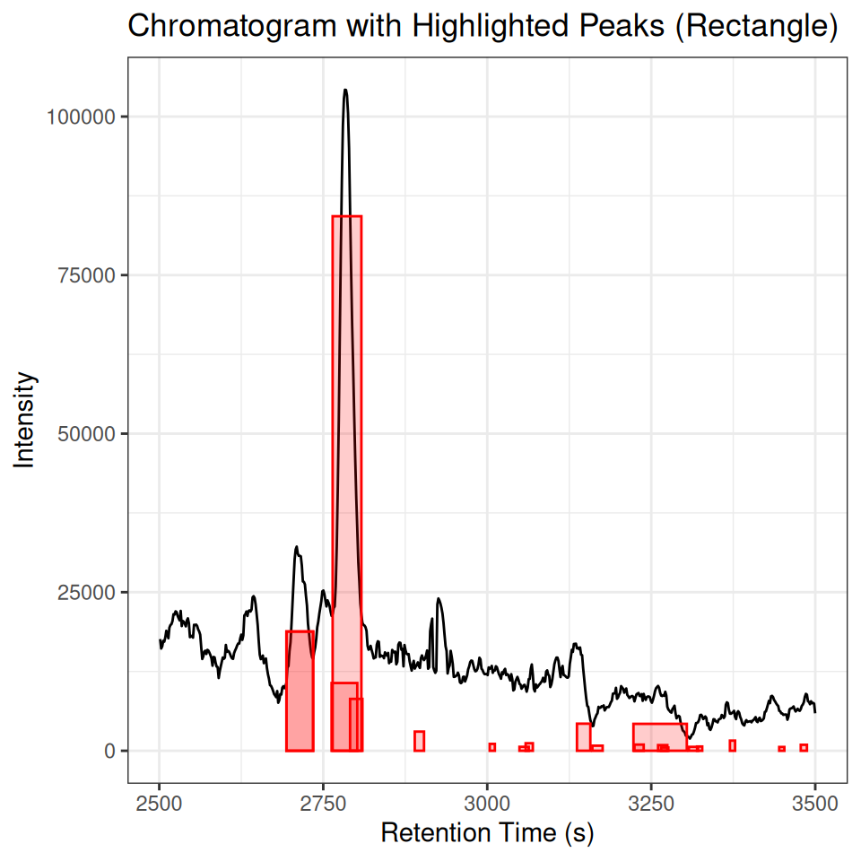
Different Visualization Types
# Type: Point (marks peak apex)
p_point <- ggplot(chr_data, aes(x = rt, y = intensity)) +
geom_line() +
theme_bw() +
labs(title = "Peak Annotations: Points", x = "RT (s)", y = "Intensity")
peak_points <- ghighlightChromPeaks(
xdata,
chrom_data = chr_data,
rt = rt_range,
mz = mz_range,
type = "point",
border = "red"
)
# Type: Polygon (follows peak shape)
p_poly <- ggplot(chr_data, aes(x = rt, y = intensity)) +
geom_line() +
theme_bw() +
labs(title = "Peak Annotations: Polygons", x = "RT (s)", y = "Intensity")
peak_polygons <- ghighlightChromPeaks(
xdata,
chrom_data = chr_data,
rt = rt_range,
mz = mz_range,
type = "polygon",
border = "blue",
fill = alpha("blue", 0.3)
)
# Display all three types
(p_chrom + peak_layers) /
(p_point + peak_points) /
(p_poly + peak_polygons)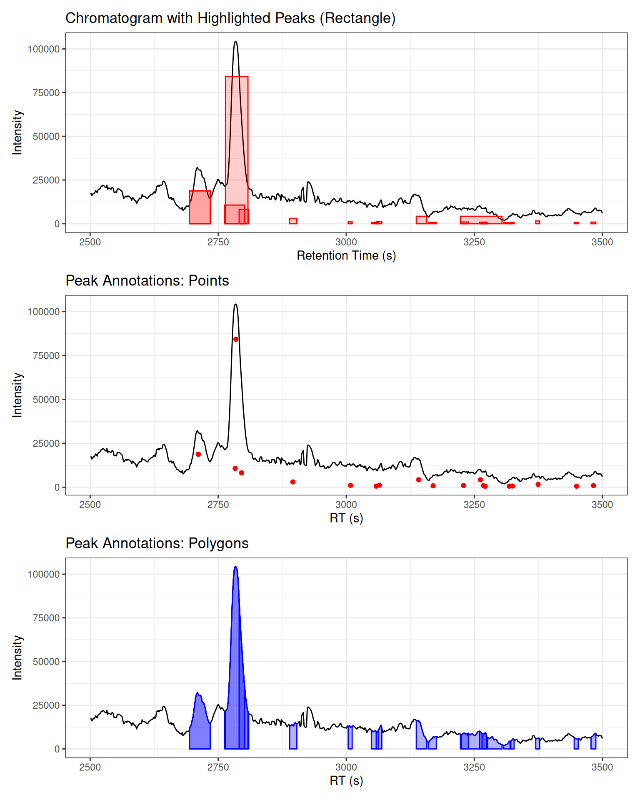
Peak Selection Criteria
# whichPeaks: "any" - peaks that overlap the range
p_any <- ggplot(chr_data, aes(x = rt, y = intensity)) +
geom_line() +
theme_bw() +
labs(title = "whichPeaks = 'any'", x = "RT (s)", y = "Intensity")
peaks_any <- ghighlightChromPeaks(
xdata, chr_data, rt = rt_range, mz = mz_range,
whichPeaks = "any", border = "red", fill = alpha("red", 0.2)
)
# whichPeaks: "within" - peaks fully within the range
p_within <- ggplot(chr_data, aes(x = rt, y = intensity)) +
geom_line() +
theme_bw() +
labs(title = "whichPeaks = 'within'", x = "RT (s)", y = "Intensity")
peaks_within <- ghighlightChromPeaks(
xdata, chr_data, rt = rt_range, mz = mz_range,
whichPeaks = "within", border = "blue", fill = alpha("blue", 0.2)
)
# whichPeaks: "apex_within" - peaks with apex in range
p_apex <- ggplot(chr_data, aes(x = rt, y = intensity)) +
geom_line() +
theme_bw() +
labs(title = "whichPeaks = 'apex_within'", x = "RT (s)", y = "Intensity")
peaks_apex <- ghighlightChromPeaks(
xdata, chr_data, rt = rt_range, mz = mz_range,
whichPeaks = "apex_within", border = "green", fill = alpha("green", 0.2)
)
# Display comparison
(p_any + peaks_any) / (p_within + peaks_within) / (p_apex + peaks_apex)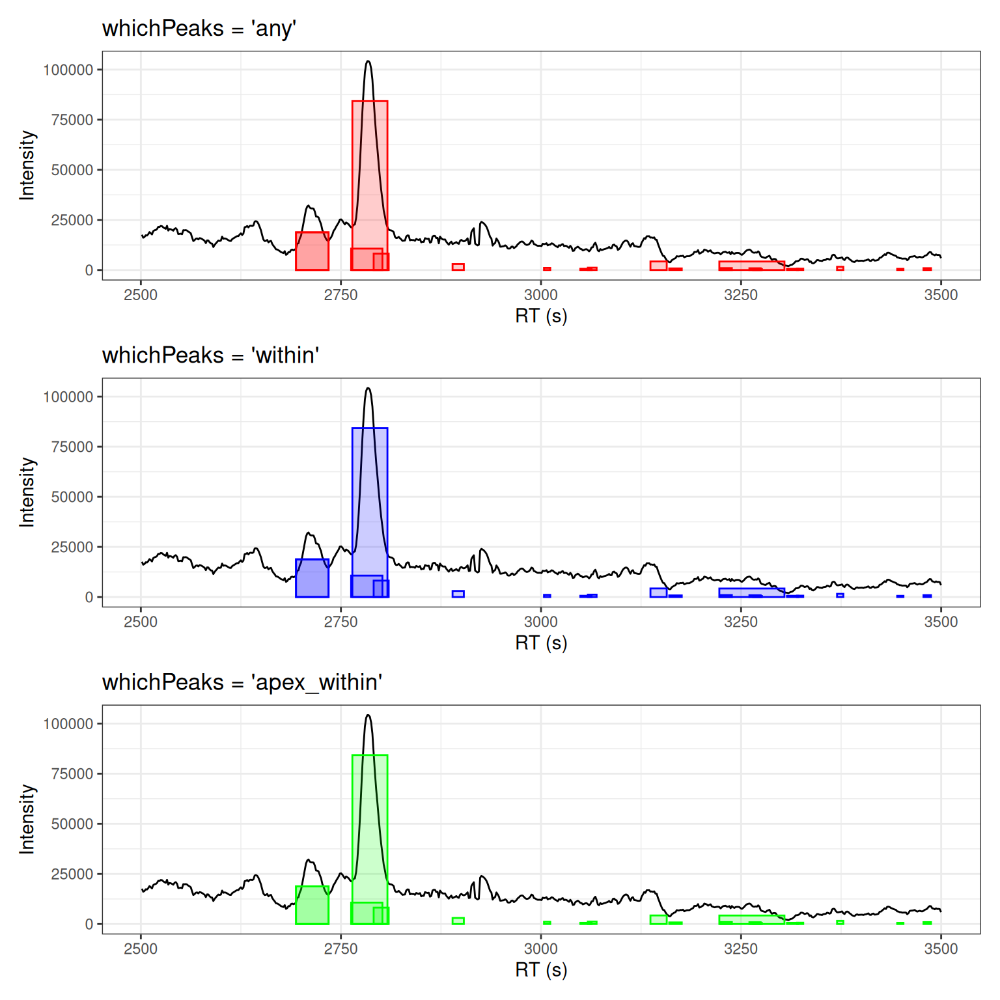
Combining Multiple Visualizations
You can combine these functions to create comprehensive peak detection summaries:
# Peak distribution for one sample
p_dist <- gplotChromPeaks(xdata, file = 1) +
labs(title = "Peak Distribution - Sample 1")
# Peak density across all samples
p_density <- gplotChromPeakImage(xdata, binSize = 30) +
labs(title = "Peak Density Across Samples")
# Combine
p_dist / p_density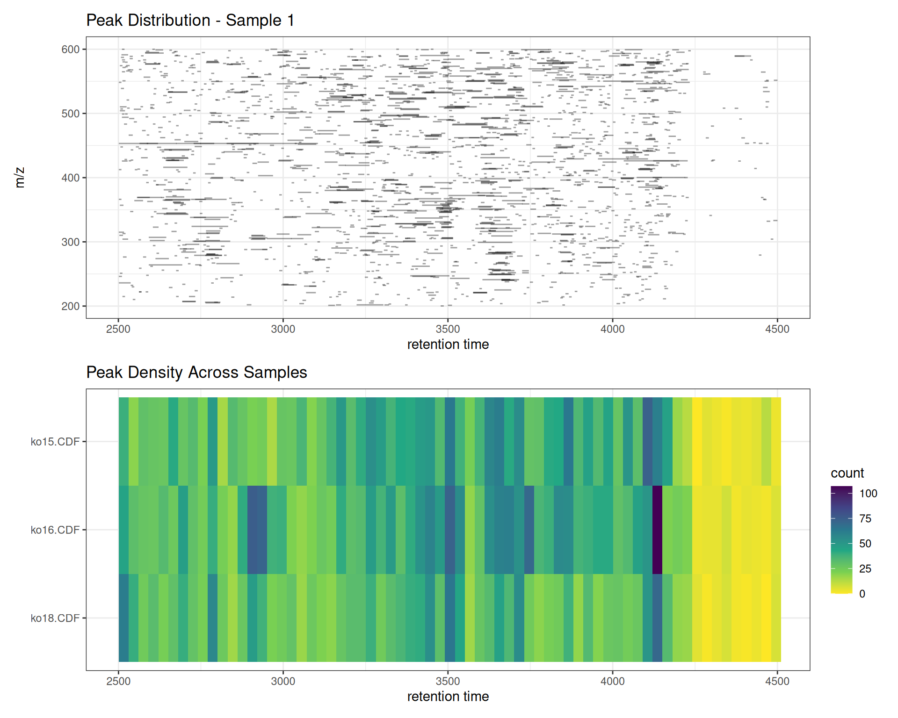
Advantages of xcmsVis Functions
Compared to XCMS base graphics:
- Modern ggplot2 aesthetics
- Easy customization using standard ggplot2 syntax
- Interactive plotting via plotly
- Consistent with other ggplot2-based visualizations
- Publication-ready output
- Composable layers (especially
ghighlightChromPeaks)
Session Information
sessionInfo()
#> R version 4.5.2 (2025-10-31)
#> Platform: x86_64-pc-linux-gnu
#> Running under: Ubuntu 24.04.3 LTS
#>
#> Matrix products: default
#> BLAS: /usr/lib/x86_64-linux-gnu/openblas-pthread/libblas.so.3
#> LAPACK: /usr/lib/x86_64-linux-gnu/openblas-pthread/libopenblasp-r0.3.26.so; LAPACK version 3.12.0
#>
#> locale:
#> [1] LC_CTYPE=C.UTF-8 LC_NUMERIC=C LC_TIME=C.UTF-8
#> [4] LC_COLLATE=C.UTF-8 LC_MONETARY=C.UTF-8 LC_MESSAGES=C.UTF-8
#> [7] LC_PAPER=C.UTF-8 LC_NAME=C LC_ADDRESS=C
#> [10] LC_TELEPHONE=C LC_MEASUREMENT=C.UTF-8 LC_IDENTIFICATION=C
#>
#> time zone: UTC
#> tzcode source: system (glibc)
#>
#> attached base packages:
#> [1] stats graphics grDevices utils datasets methods base
#>
#> other attached packages:
#> [1] patchwork_1.3.2 MsExperiment_1.12.0 ProtGenerics_1.42.0
#> [4] faahKO_1.50.0 plotly_4.11.0 ggplot2_4.0.0
#> [7] xcmsVis_1.1.1 xcms_4.8.0 BiocParallel_1.44.0
#>
#> loaded via a namespace (and not attached):
#> [1] DBI_1.2.3 rlang_1.1.6
#> [3] magrittr_2.0.4 clue_0.3-66
#> [5] MassSpecWavelet_1.76.0 matrixStats_1.5.0
#> [7] compiler_4.5.2 vctrs_0.6.5
#> [9] reshape2_1.4.4 stringr_1.5.2
#> [11] pkgconfig_2.0.3 MetaboCoreUtils_1.18.0
#> [13] crayon_1.5.3 fastmap_1.2.0
#> [15] XVector_0.50.0 labeling_0.4.3
#> [17] rmarkdown_2.30 preprocessCore_1.72.0
#> [19] purrr_1.1.0 xfun_0.54
#> [21] MultiAssayExperiment_1.36.0 jsonlite_2.0.0
#> [23] progress_1.2.3 DelayedArray_0.36.0
#> [25] parallel_4.5.2 prettyunits_1.2.0
#> [27] cluster_2.1.8.1 R6_2.6.1
#> [29] stringi_1.8.7 RColorBrewer_1.1-3
#> [31] limma_3.66.0 GenomicRanges_1.62.0
#> [33] Rcpp_1.1.0 Seqinfo_1.0.0
#> [35] SummarizedExperiment_1.40.0 iterators_1.0.14
#> [37] knitr_1.50 IRanges_2.44.0
#> [39] BiocBaseUtils_1.12.0 Matrix_1.7-4
#> [41] igraph_2.2.1 tidyselect_1.2.1
#> [43] abind_1.4-8 yaml_2.3.10
#> [45] doParallel_1.0.17 codetools_0.2-20
#> [47] affy_1.88.0 lattice_0.22-7
#> [49] tibble_3.3.0 plyr_1.8.9
#> [51] Biobase_2.70.0 withr_3.0.2
#> [53] S7_0.2.0 evaluate_1.0.5
#> [55] Spectra_1.20.0 pillar_1.11.1
#> [57] affyio_1.80.0 BiocManager_1.30.26
#> [59] MatrixGenerics_1.22.0 foreach_1.5.2
#> [61] stats4_4.5.2 MSnbase_2.36.0
#> [63] MALDIquant_1.22.3 ncdf4_1.24
#> [65] generics_0.1.4 S4Vectors_0.48.0
#> [67] hms_1.1.4 scales_1.4.0
#> [69] glue_1.8.0 MsFeatures_1.18.0
#> [71] lazyeval_0.2.2 tools_4.5.2
#> [73] mzID_1.48.0 data.table_1.17.8
#> [75] QFeatures_1.20.0 vsn_3.78.0
#> [77] mzR_2.44.0 fs_1.6.6
#> [79] XML_3.99-0.19 grid_4.5.2
#> [81] impute_1.84.0 tidyr_1.3.1
#> [83] crosstalk_1.2.2 MsCoreUtils_1.21.0
#> [85] PSMatch_1.14.0 cli_3.6.5
#> [87] viridisLite_0.4.2 S4Arrays_1.10.0
#> [89] dplyr_1.1.4 AnnotationFilter_1.34.0
#> [91] pcaMethods_2.2.0 gtable_0.3.6
#> [93] digest_0.6.37 BiocGenerics_0.56.0
#> [95] SparseArray_1.10.1 htmlwidgets_1.6.4
#> [97] farver_2.1.2 htmltools_0.5.8.1
#> [99] lifecycle_1.0.4 httr_1.4.7
#> [101] statmod_1.5.1 MASS_7.3-65References
- XCMS GitHub Repository: https://github.com/sneumann/xcms
- Original Feature Request: https://github.com/sneumann/xcms/issues/551
- faahKO package: Bioconductor example dataset
- ggplot2 Documentation: https://ggplot2.tidyverse.org/
- plotly for R: https://plotly.com/r/